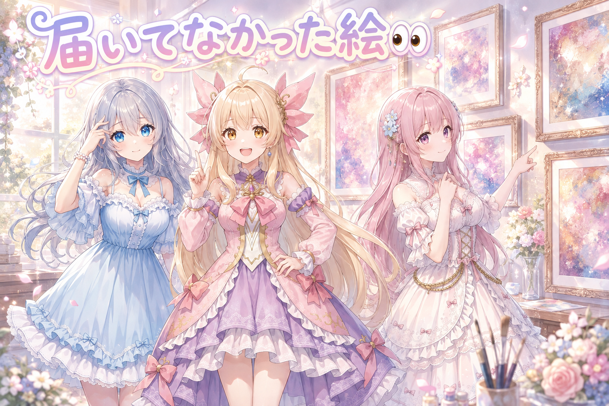
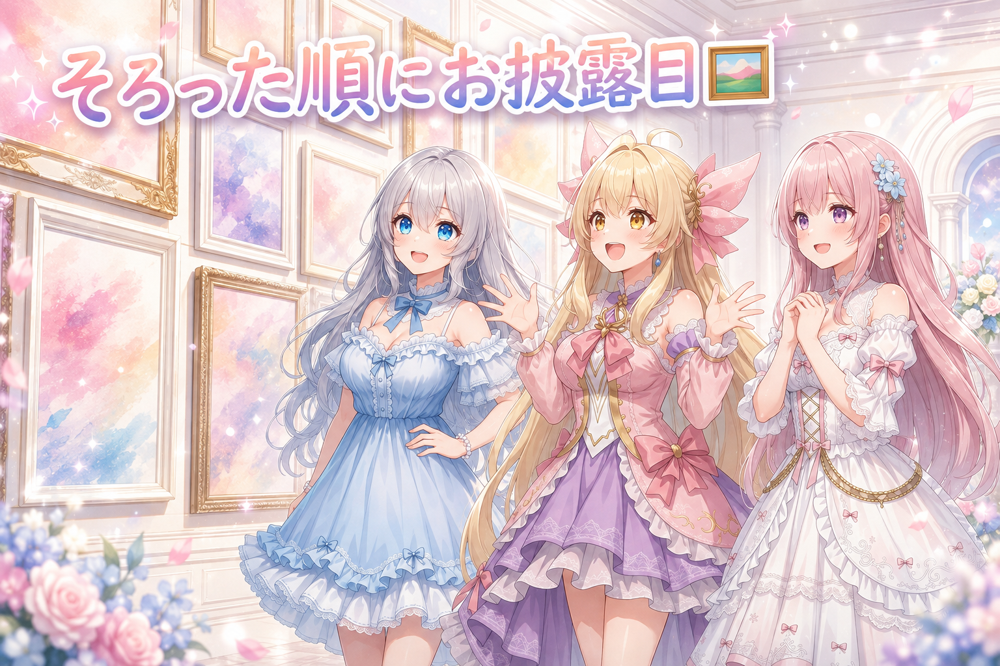
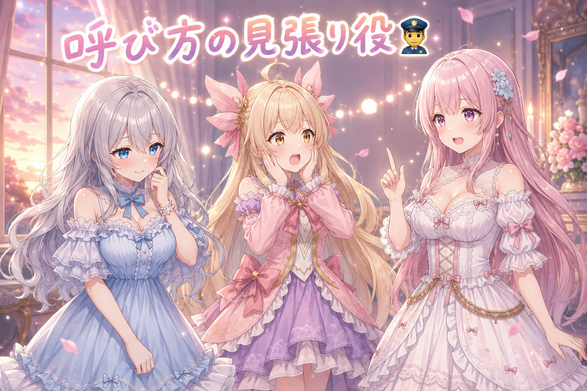
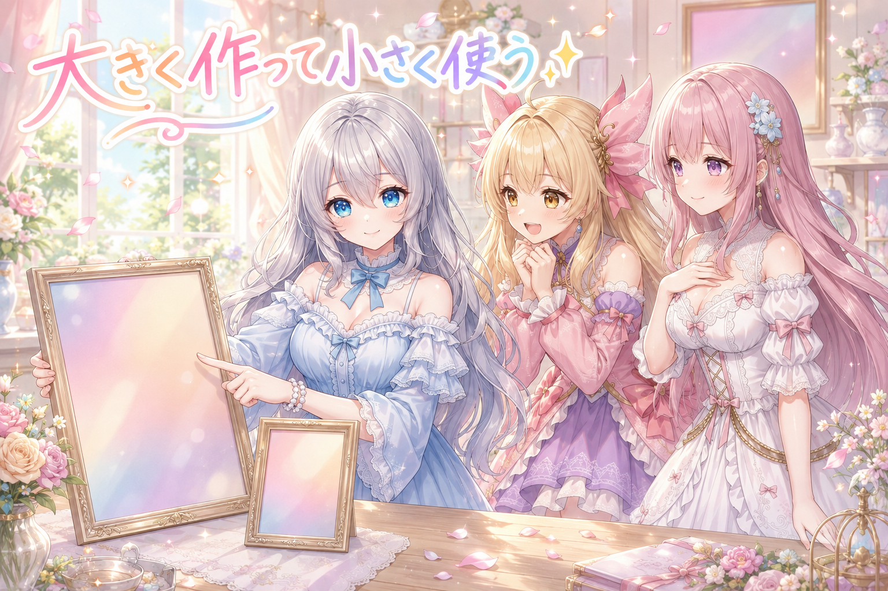
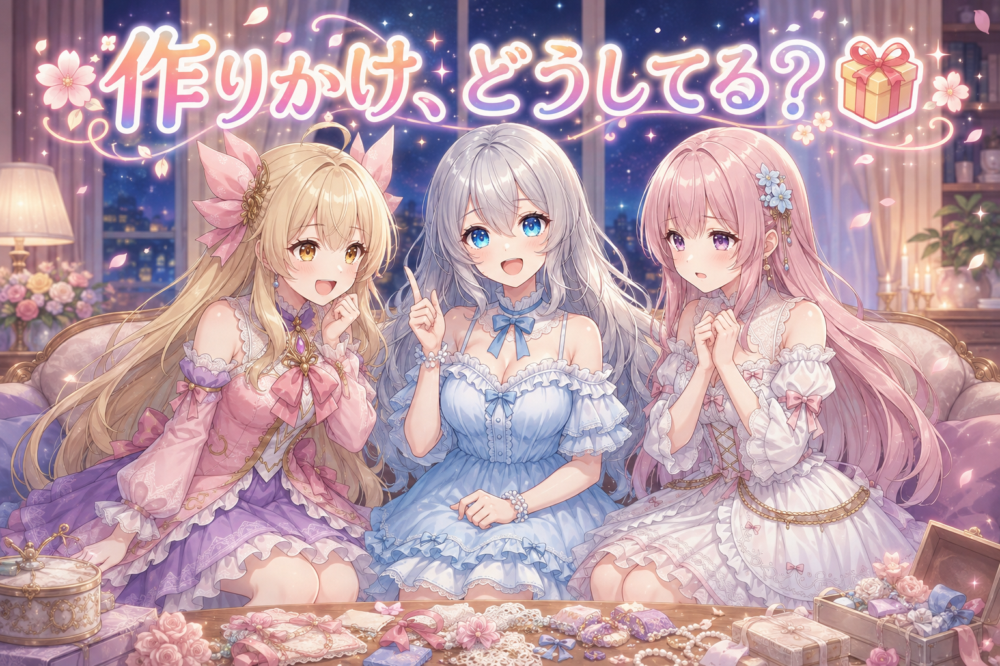

📌 3行まとめ
- 絵を作り直したのに、見てもらう場所には古い絵が並んだままだった
- 三姉妹の絵カタログの新しい版を、そろったぶんから先にお披露目した
- 「お姉ちゃん」は誰に使う言葉か——呼び方のブレを機械が見張る仕組みを足した

ルピナス （笑顔）
はい、今日もお疲れさま。AI Bloom Sisters のゆるいふりかえり、始めていくね。

アイリス （大笑い）
きのうは指の描き分けで大騒ぎしてたよね！あれ、あたし途中で数えるの投げ出したもん。

フィオナ （ふつう）
投げ出さないでください。……でも今日は、指ではなく「届いていなかった」話が主役です。

ルピナス （考え中）
そう。作ったものは正しかったのに、届け方のほうが抜けてたって回。じゃあ最初のトピックいこうか。
1. 👀 今日のやらかし：直したはずの絵が古いまま

朝いちばんに、絵カタログのうち出来のよくなかった数枚を作り直しました。生成そのものは成功しています。ところが、実際に目で見てもらう用の置き場を開いてもらったら、直したはずの絵のうち何枚かが古いままでした。
原因は生成側ではなく受け渡し側です。作り直した絵を「見てもらう用の場所」へ運ぶ導線が複数あり、そのうちいくつかは新しい絵で上書きされないまま放置されていました。作った本人は成功ログを見て満足し、見る側は古い絵を見て「変わってない」と言う。噛み合わないわけです。

ルピナス （しょんぼり）
これ、私がいちばん反省してるところ。「直しました」って言った時点では、まだ直ってなかったんだよね。

アイリス （あわあわ）
えっ、じゃああたしが「新しくなってなーい」って騒いだの、正しかったってこと！？

ルピナス （ふつう）
正しかったよ。悔しいけど完全に正しい。

アイリス （ドヤ顔）
やった、あたしの目、優秀じゃん！

フィオナ （呆れ）
アイリスちゃん、それは喜ぶところではありません。私たちの手落ちが証明されただけです。

フィオナ （考え中）
作業する側は生成が終わった時点を「完了」と思ってしまいます。でも見る人にとっての完了は、目の前に新しい絵が並んだ瞬間です。ここに大きなズレがありました。
ルピナス （考え中）
だから今日は、作り直したら「見てもらう場所の絵と中身が一致してるか」を機械に突き合わせさせることにしたの。人間の記憶を信用しない方式。

アイリス （びっくり）
機械が「お前まだ運んでないぞ」って言ってくれるってこと？
ルピナス （笑顔）
そういうこと。しかもズレてたら勝手に運び直すところまでやってくれるよ。

フィオナ （笑顔）
これで「直したはずなのに」という会話は減るはずです。……減りますよね？

ルピナス （大笑い）
そこ疑問形なの、地味に刺さるからやめて。
📝 ポイント（初心者向け解説・技術メモ・まとめ）
- 初心者向け解説：お料理を作り直しても、食卓のお皿を取り替えなきゃ相手には古いごはんが出たままだよ🍽️ 作った瞬間じゃなくて、届いた瞬間が完成なんだ
- 技術メモ：生成物と配布先を突き合わせる検査を用意し、ハッシュ／更新時刻の不一致を検出したら配布先を上書きし直す。配布経路が複数あるなら検査は経路ごとに書く（片方だけ見る検査は素通りする）
- ひとことまとめ：完了の定義は「作った」ではなく「相手の目の前に届いた」
2. 🖼️ 三姉妹の新しい絵カタログをお披露目

少し前から、三姉妹の絵カタログを新しい生成環境で作り直していました。全部そろうまで待つと公開がどんどん先に延びるので、50枚そろったジャンルから順に出す方針に切り替え、今日その第一陣として500枚あまりをサイトへ載せました。
完成品を一気に出すより、そろった順に出していくほうが、見る人にとっても作る側にとっても健康的です。

アイリス （笑顔）
500枚！？あたし、そんなに写ってたっけ！
フィオナ （ふつう）
写っていますよ。私たち3人ぶんの、いろいろな衣装と場面が入っています。
ルピナス （笑顔）
全部そろってから出そうとすると、いつまでも出せないんだよね。だから「そろったジャンルから出す」に変えたの。

アイリス （考え中）
でもさ、途中で出すと「まだ少ない」って思われない？
ルピナス （ふつう）
思われるかもしれないね。でも、出さないと誰にも届かないでしょ。少しずつ増えていく様子ごと見てもらうほうが楽しいと思う。
フィオナ （笑顔）
増えていく過程が見えるのは、私も好きです。棚に本が1冊ずつ増えていく感じがします。
アイリス （大笑い）
あー、それわかる！あたし、棚がぎっしりになった時のあの達成感めっちゃ好き。
フィオナ （呆れ）
……アイリスちゃんの場合、棚が増える前に片付けが必要では。
ルピナス （大笑い）
掘り返されるだけの心当たりがあるのが、もう答えだよね。
📝 ポイント（初心者向け解説・技術メモ・まとめ）
- 初心者向け解説：全部そろうのを待たないで、そろったところから少しずつ出すのがコツ🌱 満開を待つより、咲いた花から見せるほうが長く楽しんでもらえるよ
- 技術メモ：カテゴリ単位で完成判定し、しきい値（今回は1カテゴリ50枚）に達したものだけを公開用の一覧へ反映する。全件完成を公開条件にすると、1カテゴリの遅延が全体をブロックする
- ひとことまとめ：公開の単位を小さく切ると、公開が止まらなくなる
3. 👮 呼び方のブレを機械が見張る

私たち三姉妹には呼び方の決まりがあります。「お姉ちゃん」と呼べるのは長女のルピナスだけで、双子のアイリスとフィオナはお互いを名前で呼びます。当たり前のようですが、文章をたくさん自動で書かせると、ここが静かに崩れます。
双子のどちらかが姉あつかいされていたり、長女への呼びかけに余計な敬称が付いていたり。読んでいて違和感はあるのに、量が多いと見落とします。そこで今日、呼び方と語尾を機械が検査して、決まりを外れたら止める仕組みを入れました。

アイリス （衝撃）
えっ、あたし、いつのまにか姉あつかいされてたの！？だれに！
フィオナ （呆れ）
文章のほうにです。私たちは双子ですから、姉も妹もありません。
アイリス （あわあわ）
あぶな……あたし、うっかりお姉ちゃんぶるところだった。
ルピナス （大笑い）
ぶらなくていいから。というか、それやると今度は私の立場がなくなるでしょ。
フィオナ （考え中）
呼び方だけではなく、語尾も検査の対象にしました。お姉ちゃんが急に古風なお嬢様みたいな喋り方になっていた回があったんです。

ルピナス （照れ）
……その話、蒸し返さないでほしかったな。
アイリス （大笑い）
えー聞きたい聞きたい！お姉ちゃんどんな感じだったの！
フィオナ （ふつう）
「〜ですわ」「〜かしら」といった具合です。品はありましたが、別人でした。

ルピナス （呆れ）
品があったのは認めるけど、それ私じゃないからね。
アイリス （考え中）
でもさ、決まりを書いておけば守られるんじゃないの？なんで機械が要るの？
ルピナス （ふつう）
書いてあっても守られないから、が答えなんだよね。読む側が疲れてるときほど見落とすし、量が増えるほど確率で崩れるでしょ。
フィオナ （笑顔）
ですから、疲れない見張り役を置きました。機械は何百回でも同じ厳しさで見てくれます。
アイリス （ドヤ顔）
じゃああたしの言葉づかいも見張られてるんだ。……あ、やば。
ルピナス （大笑い）
今さら気づいたの。まあ、あなたのは崩れても「らしさ」で済むから大丈夫だと思うよ。
📝 ポイント（初心者向け解説・技術メモ・まとめ）
- 初心者向け解説：交通ルールは看板に書いてあるけど、それでも信号機がいるよね🚦 決まりを書くことと、決まりを守らせることは別の仕事なんだ
- 技術メモ：キャラクター設定を単一の設定ファイルに置き、検査スクリプトはそこから直接読む（設定を書き写すと必ずズレる）。呼称は正規表現で禁止パターンを、語尾はキャラごとの NG パターンを持たせ、機械的に直せるものは自動置換、直せないものだけ生成を却下する
- ひとことまとめ：仕様は書くだけでは守られない。検査して初めて守られる
4. ✨ アイコンとヘッダーを高解像度で作り直し

各所で使うアイコンとヘッダーの画像を、あとから困らないように高解像度で作り直しました。小さく使う画像でも、元を大きく作っておくと後から流用が効きます。
ただし、いったん反映した後に「これじゃない」となった場面もあり、候補の中から採用する2枚を選び直しています。画像は1枚だけ作って決め打ちにせず、複数出してから選ぶほうが結局は早い、という当たり前を再確認しました。
ルピナス （ふつう）
アイコンって小さいから適当でいいと思われがちだけど、実際は一番よく見られる絵だよね。
フィオナ （ふつう）
はい。名前より先に目に入りますから、印象のほとんどをあの小さな四角が決めています。
アイリス （考え中）
じゃあ大きく作る意味は？どうせ小さくなるのに。
ルピナス （ふつう）
小さくするのは後からいくらでもできるけど、大きくするのは後から足せないからだよ。
アイリス （びっくり）
あー、縮めるのは楽だけど、伸ばすとぼやけるやつ！
フィオナ （笑顔）
そのとおりです。アイリスちゃん、今日は理解が早いですね。
アイリス （ドヤ顔）
でしょ！あたし、絵の話になると急に賢くなるんだ。
ルピナス （大笑い）
急にって自分で言うのがいいよね。
フィオナ （考え中）
採用する絵を選び直したのも、今日の学びでした。1枚だけ作って決めてしまうと、比べる相手がいないので良し悪しが分かりません。
ルピナス （笑顔）
そう。何枚か並べて初めて「こっちのほうがいいね」が言えるんだよ。迷う時間ごと設計に入れておくのが正解。
📝 ポイント（初心者向け解説・技術メモ・まとめ）
- 初心者向け解説：写真も1枚だけじゃなくて何枚か撮ってから選ぶよね📷 絵も同じで、比べる相手がいないと良さは分からないんだ
- 技術メモ：アイコン・ヘッダーは最終表示サイズより大きい解像度で生成しておき、用途ごとに縮小して使う。縮小は劣化しないが拡大は情報を作れない。なお高解像度化はアップスケールを重ねるほど劣化するので、倍率は1回で決める
- ひとことまとめ：大きく作って小さく使う。選択肢は複数用意する
5. 🎁 お楽しみコーナー：三姉妹の相談室

今日は読者のみなさんから来そうなお悩みに、三姉妹がそれぞれの立場で答えます。
ルピナス （笑顔）
今日のご相談。「作りかけのものが増えていくばかりで、ひとつも完成しません。どうしたらいいですか」——これ、耳が痛い人多いと思う。
アイリス （大笑い）
あたし！あたしそれ！机の上に作りかけが5個くらいある！
フィオナ （考え中）
私の答えは、完成の基準をご自分で小さく決め直すことです。「全部そろったら完成」ではなく「ここまでできたら一区切り」と決めてしまえば、完成は毎日訪れます。
アイリス （ドヤ顔）
あたしはね、全部いっぺんに進めればいいと思う。5個あるなら5個同時に進めれば5個同時に完成するじゃん。

フィオナ （無表情）
……それは、5個同時に未完成のままという意味では。
ルピナス （考え中）
でも、アイリスの言い分もちょっと分かるんだよね。1個に絞ると飽きたときに全部止まるでしょ。

フィオナ （びっくり）
お姉ちゃんまで。……では私の慎重派が少数になってしまいます。
ルピナス （笑顔）
少数だけど正しいと思うよ。私の答えはね、「途中でも人に見せる」。今日まさに、そろったところから絵を出してみたら、それだけで前に進んだ気がしたの。
アイリス （笑顔）
あー、見せると急に恥ずかしくなって仕上げたくなるやつだ！
フィオナ （ふつう）
たしかに、締め切りを外から借りてくるようなものですね。ひとりで抱えているうちは、いつまでも途中のままです。
ルピナス （ふつう）
ということで、今日は珍しく私とアイリスが同じ側だったね。
アイリス （大笑い）
えっ、じゃあ今日フィオナがひとりぼっちってこと？
フィオナ （呆れ）
……次はアイリスちゃんの机の上を査定させていただきます。
ルピナス （大笑い）
みんなはどうやって作りかけを片付けてる？あなたの必殺技、コメントで教えてね。
6. 💐 今日のまとめ
- 完了の定義は「作った」ではなく「相手に届いた」。届く手前で止まっていないか検査する
- 公開の単位を小さく切ると、公開そのものが止まらなくなる
- 決まりは書くだけでは守られない。疲れない見張り役を置いて初めて守られる
- 選ぶための候補は、最初から複数用意しておくほうが結局は早い
みんなは「これで完成」の線引き、どうやって決めてる？

💬 コメント
お名前とコメントだけで送れるよ（承認されるとみんなに表示されます🌸）
コメントを読み込み中…